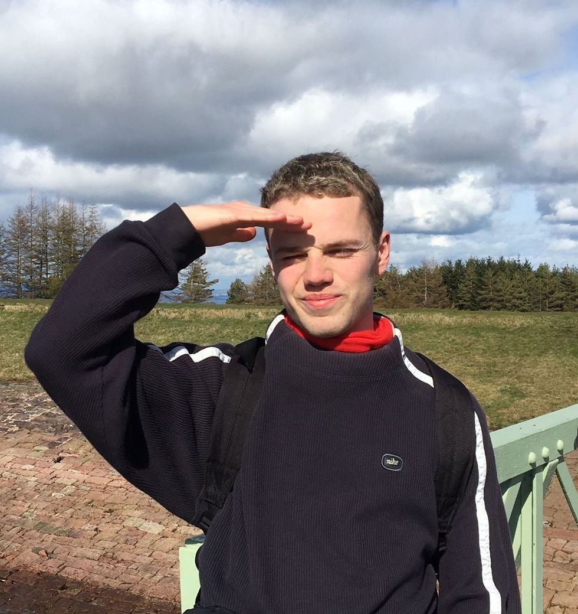
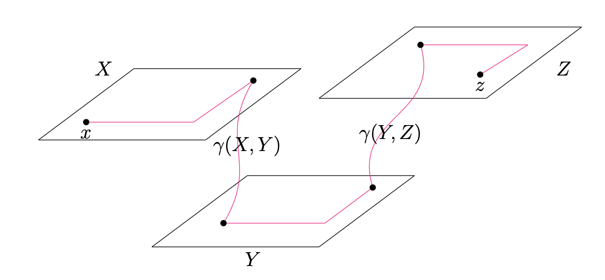

Patrick Nairne

I am a postdoctoral researcher in bioinformatics at the Robinson Lab which is part of the Berlin Institute of Health at Charité. I joined the lab in June 2025.
You can contact me via:
Mathematics
Previously I was a PhD student in mathematics at the University of Oxford working within the field of geometric group theory. My supervisor was Professor Cornelia Druțu. I successfully defended my thesis in May 2024. You can find links to my mathematics publications and preprints here: Mathematics Research.
